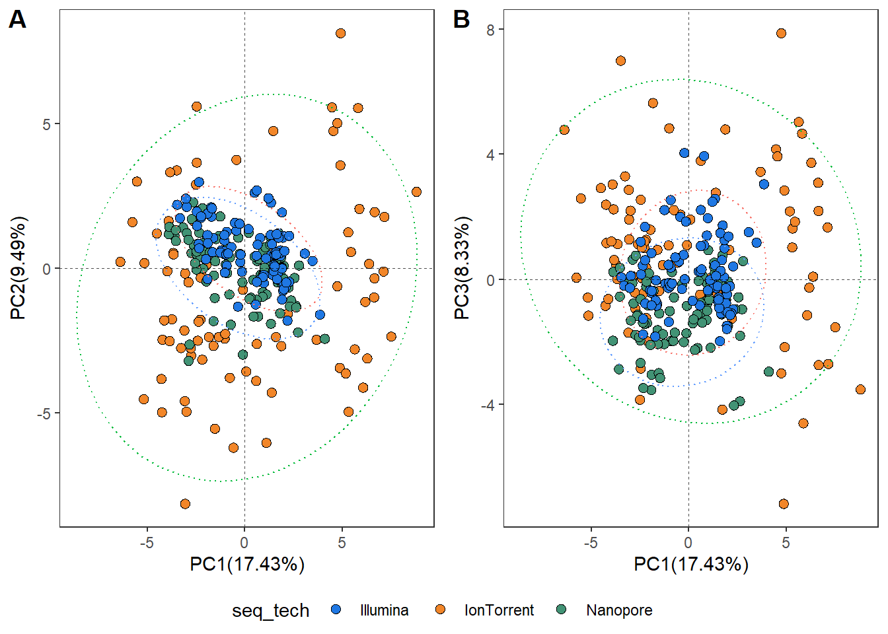

Sequencing technology comparison
library("MicrobiotaProcess")
library("ggpubr")
library("ape")
library("UpSetR")
library("vegan")
WorkingPS<-readRDS("Processed_data/WorkingPS.rds")To compare our sequencing methods, we first need to use the taxonomy; we can’t make the comparison at the ASV level since they are not constant across data sets.
The get_taxadf function in the MicrobiotaProcess package is used to aggregate data with the same taxonomy. The tax_glom function in the phyloseq package also performs this task. We will also have to rebuild the tree and our phyloseq object.
WorkingPS_glom <- get_taxadf(WorkingPS,
taxlevel=7,
type = "species")
WorkingPS_glom_tree = rtree(ntaxa(WorkingPS_glom),
rooted=TRUE,
tip.label=taxa_names(WorkingPS_glom))
WorkingPS_glom2 <- phyloseq(phyloseq::tax_table(WorkingPS_glom),
phyloseq::otu_table(WorkingPS_glom),
WorkingPS_glom_tree,
phyloseq::sample_data(WorkingPS_glom))PCA
We can then use our agglomerated taxonomy to compare our 3 sequencing methods using principal component analysis (PCA).
Once again, we’ll use the MicrobiotaProcess package to obtain and plot the results of our PCA.
- Note here that we have used the robust centered log ratio (rclr), a transformation method commonly used in compositional data analysis.
WorkingPS_glom2_PCA <- get_pca(obj=WorkingPS_glom2,
method=("rclr"))
pcaplot1 <-ggordpoint(obj=WorkingPS_glom2_PCA, pc=c(1, 2), biplot=FALSE, speciesannot=FALSE,
factorNames=c("seq_tech"), ellipse=TRUE)+
scale_fill_manual(values=get_cols(6))+
theme(plot.title = element_blank())+
theme(legend.position="Null")
pcaplot2 <- ggordpoint(obj=WorkingPS_glom2_PCA, pc=c(1, 3), biplot=FALSE, speciesannot=FALSE,
factorNames=c("seq_tech"), ellipse=TRUE) +
theme(plot.title = element_blank())+
scale_fill_manual(values=get_cols(6))
pcaplot1 | pcaplot2
We can see from the graph that the data are fairly clustered by technology, that nanopore and illumina data are fairly close together, and that IonTorrent data are more scattered.
Let’s try a principal coordinate analysis (PCoA).
PCOA
Similarly, let’s use the get_pcoa function (MicrobiotaProcess) to obtain and plot our PCoA results.
- Note here that we have used the wieghted unifrac distance method, which account for phylogenetic distance and abundance.
pcoa_results <- get_pcoa(obj=WorkingPS_glom2,
distmethod="wunifrac",
method="hellinger")
pcoaplot1 <- ggordpoint(obj=pcoa_results,
pc=c(1, 2),
biplot=FALSE,
factorNames=c("seq_tech"),
ellipse=TRUE,
poinsize = 1.8,
stroke = 0.2)+
theme(legend.box = "horizontal", legend.position = "Null")+
scale_fill_manual(values=get_cols(6))+
theme(legend.text=element_text(size=8))+
theme(legend.title = element_blank())+
theme(plot.title = element_blank())+
guides(fill = guide_legend(keywidth = 0.6,
keyheight = 0.7,
ncol = 1))
pcoaplot2 <- ggordpoint(obj=pcoa_results,
pc=c(1, 3),
biplot=FALSE,
factorNames=c("seq_tech"),
ellipse=TRUE,
poinsize = 1.8,
stroke = 0.2)+
theme(legend.box = "horizontal", legend.position = "right")+
scale_fill_manual(values=get_cols(6))+
theme(legend.text=element_text(size=8))+
theme(legend.title = element_blank())+
theme(plot.title = element_blank())+
theme(legend.direction = "vertical", legend.box = "vertical")+
guides(fill = guide_legend(keywidth = 0.6,
keyheight = 0.7,
ncol = 1))
pcoaplot1 | pcoaplot2
Once again, we can see that the data are grouped by technology, and that Illumina’s data seem closer to Nanopore’s than IonTorrent’s.
Upset Plot
Like Venn diagrams, UpSet graphs are a data visualization method for quantifying elements shared between and unique to given elements of comparison.
We use the get_upset function from the MicrobiotaProcess package to
upsetda <- get_upset(obj=WorkingPS_glom2, factorNames="seq_tech")
upset(upsetda, sets=unique(as.vector(sample_data(WorkingPS_glom2)$seq_tech)),
sets.bar.color = "#56B4E9",
order.by = "freq",
empty.intersections = "on")
Permanova
dist_mat <- get_dist(WorkingPS_glom2, distmethod ="unifrac", method="hellinger")
sampleda <- data.frame(sample_data(WorkingPS_glom2), check.names=FALSE)
sampleda <- sampleda[match(colnames(as.matrix(dist_mat)),rownames(sampleda)),,drop=FALSE]
sampleda$seq_tech <- factor(sampleda$seq_tech)
set.seed(1024)
adonis_res <- adonis(dist_mat ~ seq_tech*Week, data=sampleda, permutation=9999)
data.frame(adonis_res$aov.tab)## Df SumsOfSqs MeanSqs F.Model R2 Pr..F.
## seq_tech 2 10.974901 5.4874505 53.863157 0.2419643 1e-04
## Week 15 5.685363 0.3790242 3.720387 0.1253455 1e-04
## seq_tech:Week 30 5.367287 0.1789096 1.756122 0.1183329 1e-04
## Residuals 229 23.329976 0.1018776 NA 0.5143573 NA
## Total 276 45.357527 NA NA 1.0000000 NAAdonis for diseased plantations vs forest
diseased_forest<- subset_samples(pooledN_soil, Status !=“Healthy_plantation”)
distmeDF <- get_dist(diseased_forest, distmethod =“wunifrac”, method=“hellinger”) sampledaDF <- data.frame(sample_data(diseased_forest), check.names=FALSE) sampledaDF <- sampledaDF[match(colnames(as.matrix(distmeDF)),rownames(sampledaDF)),,drop=FALSE] sampledaDF\(Status <- factor(sampledaDF\)Status)
set.seed(1024) adonis_DF <- adonis(distmeDF ~ Status, data=sampledaDF, permutation=9999)
pairwise_p<-numeric() pairwise_p[“DF”] <- adonis_DF[[“aov.tab”]][[“Pr(>F)”]][1]
Adonis for healthy plantations vs forest
healthy_forest<- subset_samples(pooledN_soil, Status !=“Diseased_plantation”)
distmeHF <- get_dist(healthy_forest, distmethod =“wunifrac”, method=“hellinger”) sampledaHF <- data.frame(sample_data(healthy_forest), check.names=FALSE) sampledaHF <- sampledaHF[match(colnames(as.matrix(distmeHF)),rownames(sampledaHF)),,drop=FALSE] sampledaHF\(Status <- factor(sampledaHF\)Status)
set.seed(1024) adonis_HF <- adonis(distmeHF ~ Status, data=sampledaHF, permutation=9999) adonis_HF
pairwise_p[“HF”] <- adonis_HF[[“aov.tab”]][[“Pr(>F)”]][1]
Adonis for diseased vs healthy plantations
diseased_healthy<- subset_samples(pooledN_soil, Status !=“Healthy_forest”)
distmeDH <- get_dist(diseased_healthy, distmethod =“wunifrac”, method=“hellinger”) sampledaDH <- data.frame(sample_data(diseased_healthy), check.names=FALSE) sampledaDH <- sampledaDH[match(colnames(as.matrix(distmeDH)),rownames(sampledaDH)),,drop=FALSE] sampledaDH\(Status <- factor(sampledaDH\)Status)
set.seed(1024) adonis_DH <- adonis2(distmeDH ~ StatusSpecieRegion, data=sampledaDH, permutation=9999)
adonis_DH
pairwise_p[“D_H”] <- adonis_DH[[“aov.tab”]][[“Pr(>F)”]][1]
p.adjust(pairwise_p, method=“hochberg”)